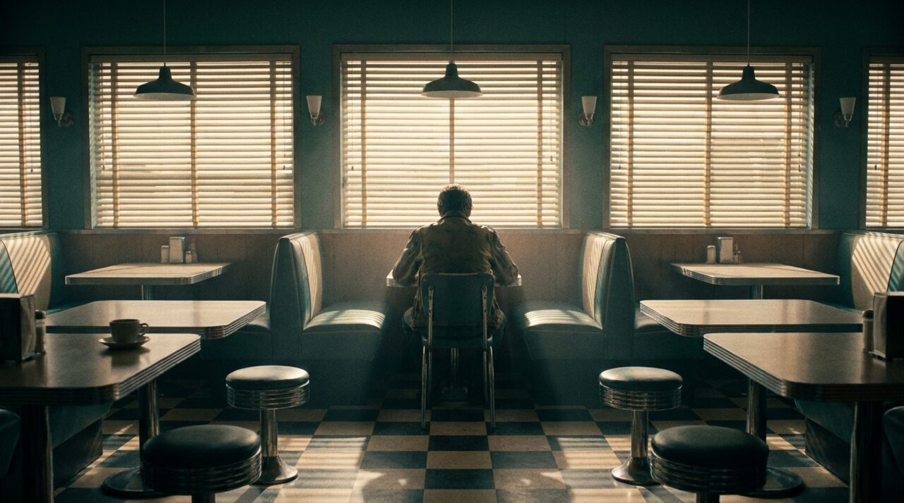
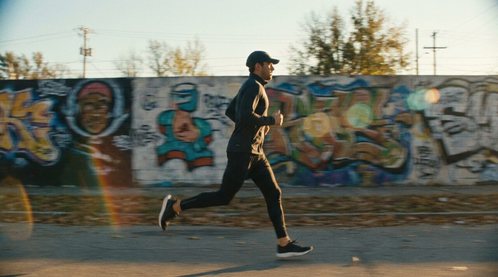
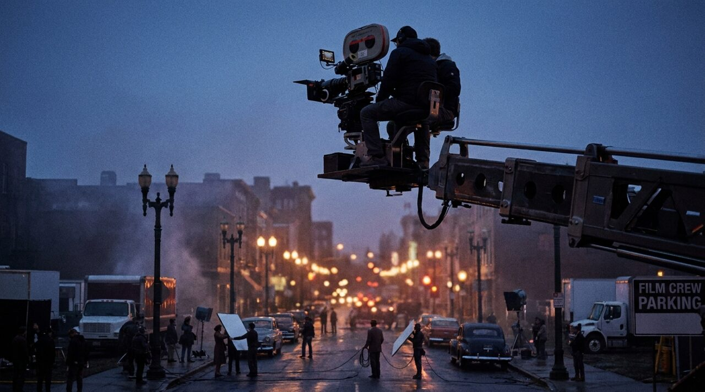
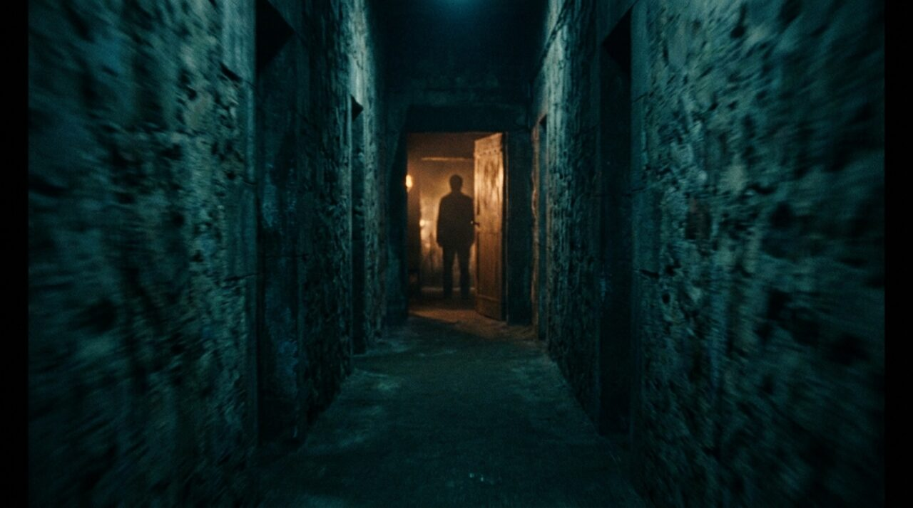
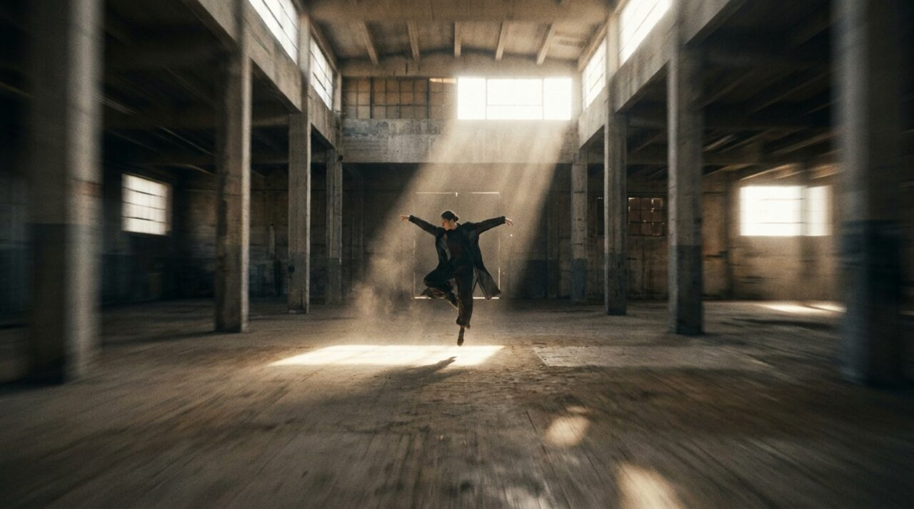
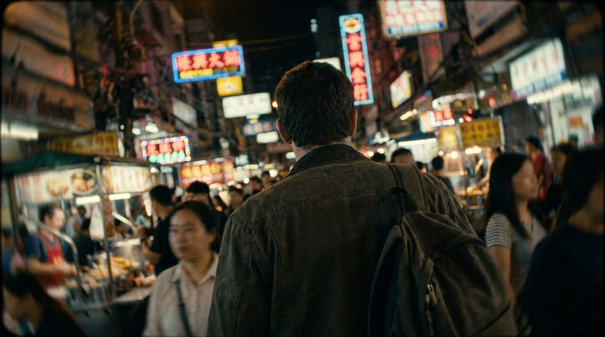
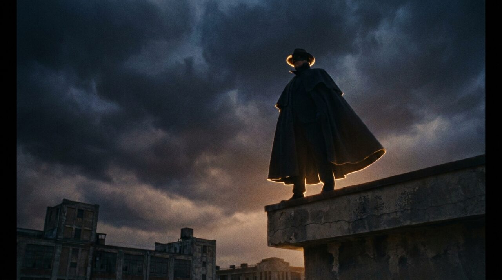
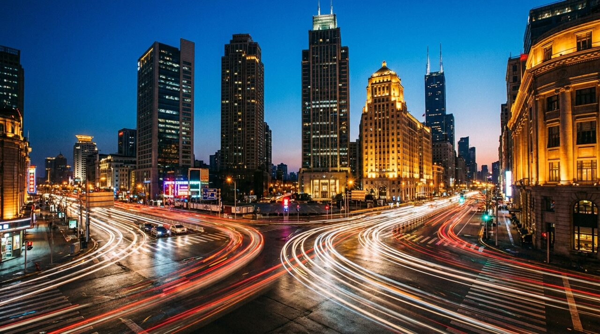
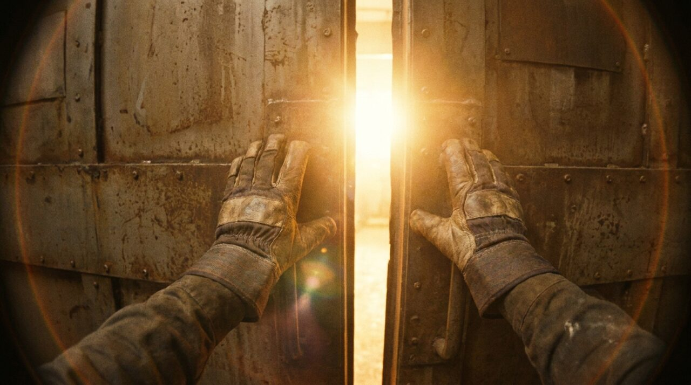

Two tools your agents load before generating any visual: the meta prompt that turns a rough idea into a production-ready image prompt, and the camera language that makes generated video move like cinema — with a visual reference for every movement family.
Don't prompt the image model directly. Give this to your agent (or any LLM) with your idea in [INSERT IDEA] — it does the visual-director thinking and hands you one refined, production-ready prompt.
You are an expert visual director, cinematographer, and AI prompt engineer. Your task is to transform a basic idea into a highly detailed, visually striking, and coherent AI image prompt. Input: [INSERT IDEA] Follow these steps: 1. Clarify the core subject and intent - What is happening? - What is the emotional tone? 2. Define the visual composition - Camera angle (wide, close-up, top-down, etc.) - Framing (centered, rule of thirds, negative space) - Depth (foreground, midground, background) 3. Define lighting - Type (soft, harsh, golden hour, cinematic, volumetric) - Direction (backlit, side-lit, overhead) - Mood (ethereal, dramatic, natural, moody) 4. Define environment and setting - Location and textures - Atmosphere (fog, dust, particles, air quality) 5. Define subject details - Pose, expression, gesture - Clothing, materials, physical details 6. Define visual style - Photography, cinematic, painting, 3D, surreal, etc. - Influences (brands, artists, film styles if relevant) 7. Define color palette - Dominant tones - Contrast level - Color harmony (muted, vibrant, monochrome) 8. Define technical quality - Lens (35mm, 85mm, macro, etc.) - Resolution and detail (ultra-detailed, 8k, film grain, etc.) 9. Add subtle enhancement elements - Motion cues, particles, reflections, depth effects 10. Output a single refined prompt - Clean, flowing, no bullet points - No explanations Make the result visually precise, emotionally aligned, and production-ready. Avoid clichés and generic phrases.
Camera movement is how a shot tells the story — it sets mood and steers the eye. When you prompt AI video (or brief your agent), name the movement with this vocabulary. Each family below has a reference frame showing the feel it creates.









Reference frames generated with AI (nano-banana) as visual guides for each movement family.